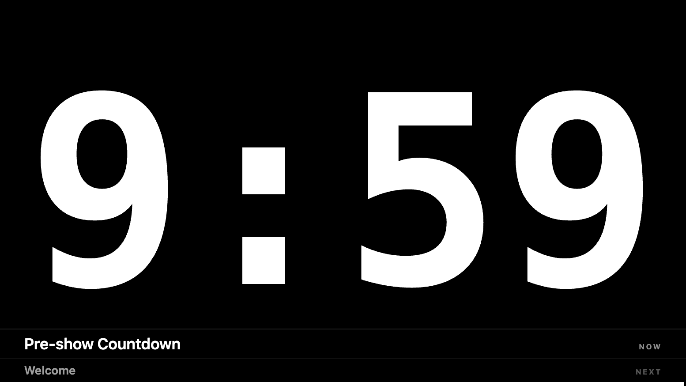

Grid placement moves only the real output. The operator preview always stays large and centred.
PROTIMER 2.1.0 · LATEST RELEASE
Free stage timer for live events and OBS
A clear speaker countdown for conferences, presentations, churches, theatres and streams. Send it to a projector, confidence monitor, OBS or phone.
Free and open source · no account · no watermark · English and Serbian First-launch help for unsigned buildsNew in ProTimer 2.1
A clearer operator view, a safer audience screen and smoother phone viewing.
One clear HH:MM:SS picker, step controls and minute presets for the timer and every cue.
START RUNDOWN launches cue one. Long lists scroll while every row remains full height.
Move and resize by mouse, control fullscreen safely, and show a view-only QR for phones.
Start in 60 seconds
Download one installer, open the app and put a clean timer in front of your audience.
Install
Choose Windows Setup or the Apple Silicon macOS DMG above.
Set the time
Open Duration, enter HH:MM:SS or choose a minute preset, then press START.
Send the screen
Drag and resize the frameless output, or select a monitor and use fullscreen from Control.
Share by QR
Show the view-only Timer or Backstage QR so the audience can follow on phones.
Everything a show actually needs
Built from real live-production work — not a generic countdown app.
Timer
Countdown, stopwatch & clock
Plus “count down to an exact time”, color warnings (white → yellow → red) and overtime with a flash at zero.
OBS
OBS / NDI overlay
A transparent output you add as an OBS Browser Source — a clean countdown over your video. NDI through OBS.
Phone
Phone remote & QR
Run the timer over Wi-Fi, put a scannable viewer QR on the stage output, or share a clock-synchronised public link without phone-clock drift.
Screen
Send to any screen
Move and resize the clean frameless output by mouse, push it fullscreen from Control, or place it in an exact grid cell.
Control
Stream Deck · OSC · API
A dedicated Bitfocus Companion module with live feedbacks, an HTTP GET API, plus OSC input for QLab and TouchOSC — the full pro-AV control stack.
Rundown
Rundown & backstage view
A run of show with NOW / NEXT, planned clock times and an over/under “are we on time?” indicator.
Free
Free & bilingual
Completely free, open-source, no sign-up. Interface in English and Serbian. Keyboard shortcuts, low latency.

A backstage screen for the whole crew
Put the rundown on any screen or phone: what’s on now, what’s next, the full schedule with clock times, and whether the show will finish ahead of or behind plan. Ideal for a green room, a stage manager or a lobby display.
One clean control window
Transport, the clear duration picker, colors, text, a scrollable cue-by-cue rundown, and network links for OBS and phones — all in one place. The preview stays large and centred while the real stage output can sit anywhere.


A clean screen for the audience
No title bar or on-screen controls. Move and resize the output directly with the mouse, then switch it to fullscreen from Control. For phones, place a view-only Timer or Backstage QR on the same output.
FAQ
Free stage timer, OBS overlay, phone remote — the common questions.
Is ProTimer free?
Yes — completely free and open-source under the MIT license. No sign-up, no subscription, no time limit.
Does it work with OBS?
Yes. ProTimer serves a web page you add as an OBS Browser Source. Turn on the transparent background and you get a clean countdown overlay over your scene. You can also route it to NDI through OBS.
Which file should I download?
Apple Silicon Mac users need the DMG. Windows 10/11 x64 users should choose the Setup EXE. Do not download GitHub's Source code ZIP or TAR.GZ files unless you are building the app yourself.
Can I control it from my phone?
Yes. ProTimer gives you a remote URL for any phone or tablet on the same Wi-Fi, plus a QR code so others can pull up the timer on their own screens.
Is it an alternative to StageTimer, Ontime or CueTimer?
It’s a free, open-source stage timer that covers the core countdown, OBS overlay and phone-remote use case — a lightweight, no-account alternative for live events, conferences, churches, theatres and streams.
Does it work with a Stream Deck?
Yes — every command is a simple HTTP GET, so Bitfocus Companion’s built-in Generic HTTP module drives it directly: Start, Reset, GO and ±time on physical keys, no plugin required.
Can people watch from outside the venue Wi-Fi?
Yes. Share Online creates a temporary public HTTPS viewer link. It is a beta third-party tunnel, so LAN remains recommended for show-critical use. Anyone with the link can access the timer and backstage rundown, including cue notes, so do not include sensitive information.
Download ProTimer for free
Choose one installer. No account, subscription or watermark.
macOS
For Apple Silicon Macs with an M1 chip or newer. Open the DMG and drag ProTimer to Applications.
ProTimer-2.1.0-arm64.dmg Download macOS DMGWindows RECOMMENDED
For Windows 10 or 11 x64. Run Setup and follow the installer prompts.
ProTimer-Setup-2.1.0.exe Download Windows SetupNeed a no-install Windows build? Use the portable EXE. GitHub's Source code archives, YAML files and blockmaps are not installers. Verify SHA-256 checksums.
Unsigned builds: Windows may show SmartScreen; choose More info → Run anyway. macOS may require System Settings → Privacy & Security → Open Anyway. Only continue when the filename and download source match this page.